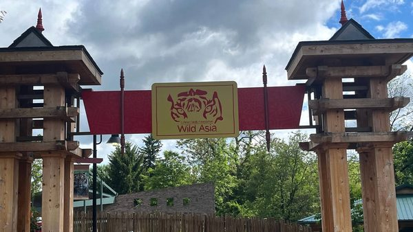

Wild Asia, Akron Zoo
Akron Zoo · Photo Tour #10

Photo Tours #10, Wild Asia-Akron Zoo, Opened on May 29th 2021 of a 2 part capital project along with Pride of Africa which opened back in 2019,
Wild Asia replaced the former grounds of the Tiger Valley & Asia Trail which closed in 2018 ( which closed shortly after my first visit to Akron back in October 2018 ) We will start our journey from our last Akron Adventure from the Snowy Owls in the Grizzly Ridge,
just before the upper entrance of Wild Asia is the Garden View Building which has a Aviary which I’ve seen some bird species in that enclosures for the past couple of years, For the past of couple years I’ve seen a Temminck’s Tragopan but last time I went,
my friend/coworker and I saw a pair of the Beautiful Lady Amherst’s Pheasant, Ok now we enter into Wild Asia which starts off with the very tall habitat that comes with a indoor viewing for the critically endangered Northern White-Cheeked Gibbon,
Male Milo & Female Parker came to the zoo to be part of a breeding program and as of October 2025, they had 2 babies born within the last few years including a female named Lolani born back in December of 2021 & a male named Leuco that we born in June of this year,
Moving Down the hill and after the ground level viewing of the White-Cheeked Gibbons, you will journey to the bamboo forests of the Himalayas and it’s home of the Red Panda and right after them are 2 more enclosures and home to the apex predator of Wild Asia,
The first of the 2 which is elevated and next to the Red Panda has a water viewing and enrichment tree for the predators to use to climb and grab meat,
the second habitat down the seating area of the amphitheater is a bamboo forest that comes with a overhead viewing above the amphitheater and these 2 enclosures are home to the Sumatran Tigers, Back then,
the zoo had a female named Diburu ( pictured in this post ) came to Akron with a Male named Eko to have some breeding attempts but then Diburu went to the Dallas Zoo in Texas and they sent a young female named Sumini to hopefully breed witb Eko and create more Sumatran Tigers,
this is definitely a must see exhibit especially to see Tigers in Gibbons go to new Heights.
Louie posted this on Facebook — open the original post →